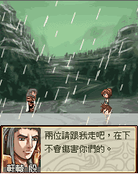
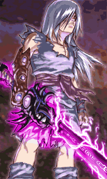
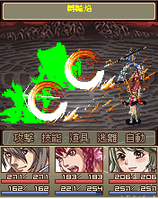

  《苍神录》的故事背景设在古代中国，以传说神话背景为题材，叙述主角战廷云周旋于天界与魔界之间的冒险。游戏登场角色众多，个性刻画入微，张力十足的情节更引人入胜。对于RPG游戏来说，一定要有足够吸引人的剧情才能够吸引住玩家的心，《苍神录》做到了，他拥有遥远的故事背景，明确的故事线索，跌荡起伏的故事发展，这将笔者带进那扑朔迷离的故事之中。能有这样扣人心弦的剧情是由于有着复杂的故事背景，阐述的故事也足以称为一部武侠小说。从开场动画所提到的那段鲜为人知的隐秘，以及剧情中恩怨情仇的交织，还是能够想像得到，展现在我们眼前的将会是一场如同史诗一般波澜壮阔的神话故事，一个流传于仙界、魔界、人界的传说。 男女主角的身世，与黄帝势力、妖魔界之间的纠葛，是故事剧情的主轴。在这段精彩的剧情引导之下，我们还可以欣赏到《苍神录》各种令人惊叹的美工制作，伴随天气变化会有闪电、雨、雪，效果非常逼真。人物的刻画具有精致的动漫风格，而背景都呈现出干净细腻的画质。  游戏的背景音乐也是一大强项，由拥有丰富配乐经验的作曲家精心编曲制作，以古典中国风呈现，旋律优美动人，贴切展现出中国古代的壮丽风景。天籁般的游戏音乐，大手笔的音乐阵容，其规模堪比PC上的精品游戏。音乐效果极为出色，如天籁之音。《苍神录》的设计框架非常前卫，但是它保留了传统RPG手游的操作方式，让任何玩家都能轻易上手。只要试过打怪的玩家都知道，攻击操作简便，但是丝毫没有减弱战斗的趣味性：在华丽逼真的战斗背景下，玩家与外形各异的强手过招，使用绚丽的特技将它们击败，其乐无穷。战斗的流畅度令人非常满意，同样值得一提的是，场景切换自如，基本不用数据的读取。 游戏画面：游戏中风格的场景，各种陈设，光影效果，伴随天气变化会有闪电，雨，雪，人物的出现，真实的显现。 游戏性： 在游戏操作上非常理想，人物移动速度很快，很爽。 游戏操作性： 导航键和数字键都可以来控制人物，不错！ 游戏声音： 音乐背景使玩家完全容入游戏中。 人性化设计： 选择是否开启声音，增加了自动攻击功能，方便的操作，读进度速度快。 |